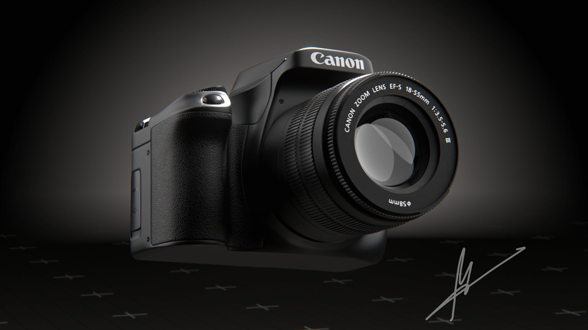
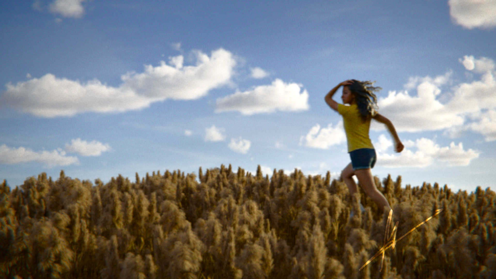
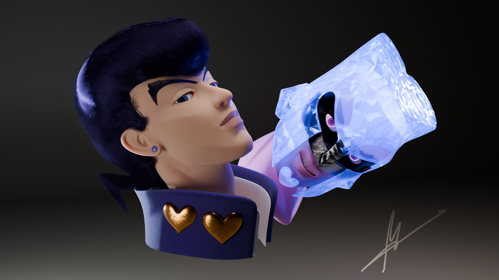
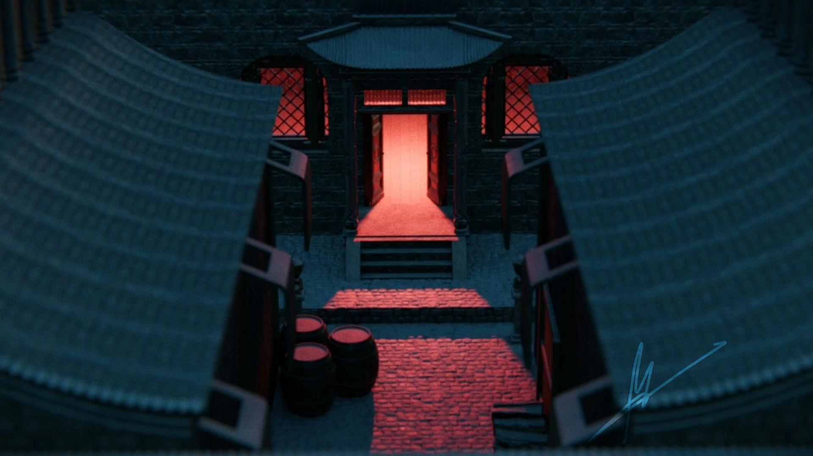
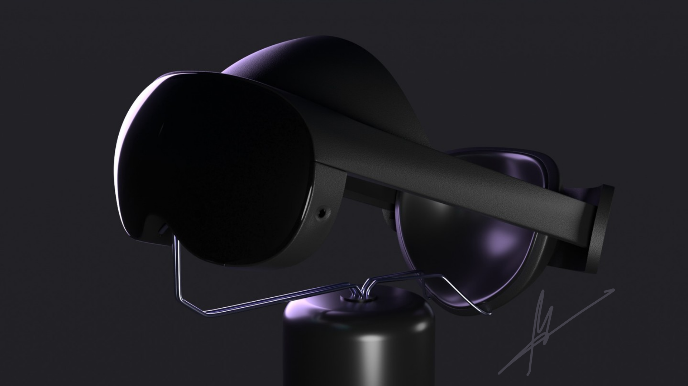
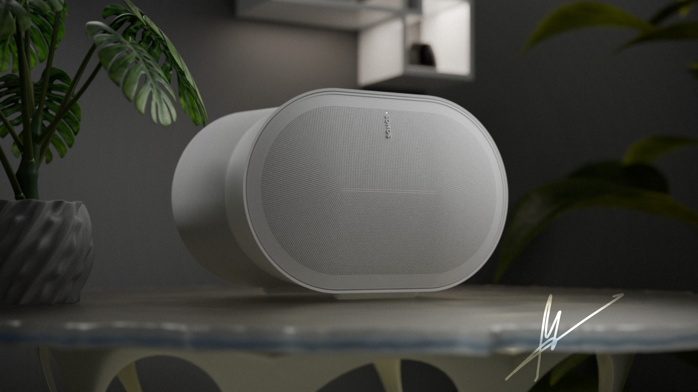
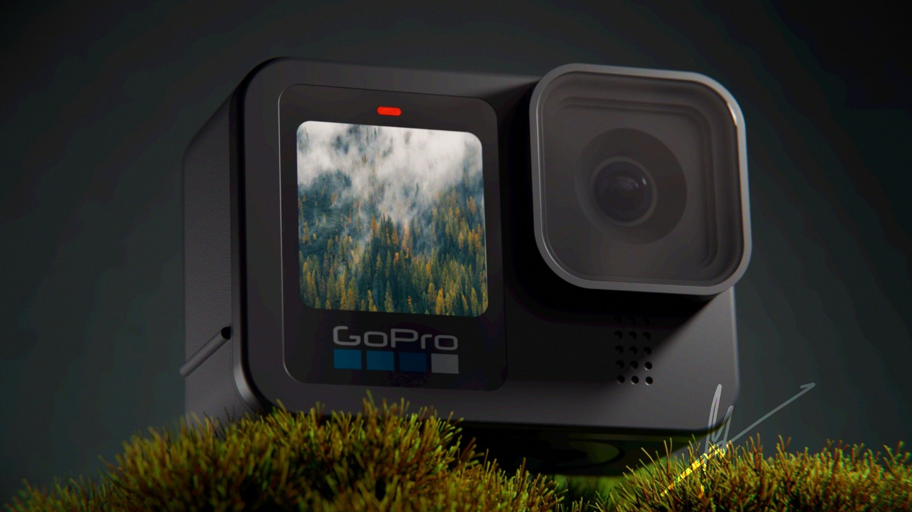
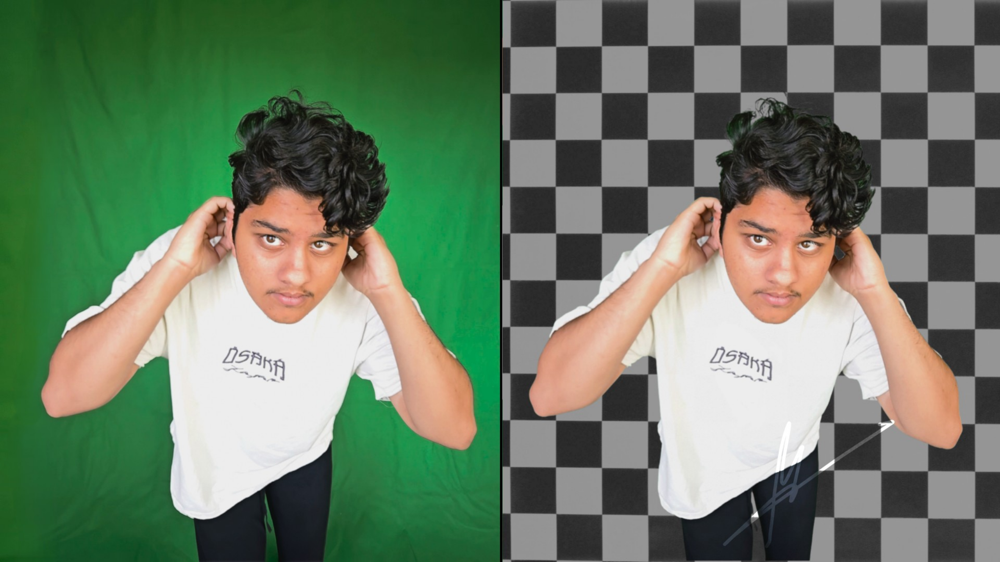
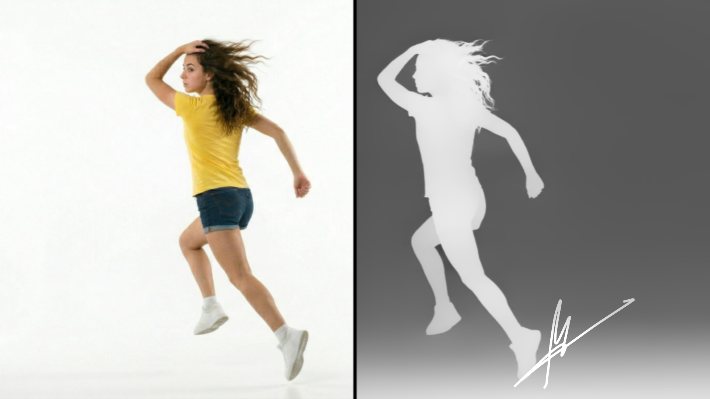

Data Science | Technical Art | 3D Environments & Tools

A Canon DSLR camera made with real world accuracy and hardsurface techniques, the topology is fully quads and the materials are mostly procedural

An liminal space style shot of an environment with a woman running through the wheat, made with photo cutouts and highly dense model scattering

A 3D sculpt of an anime character form JOJOs Bizzare Adventure, every part is sculpted by hand and the hair is built of thousands of hair strands combed to place

A recreation of a shot form an old japaneese movie (Raise the Red Lantern). This scene is built by hand and utilized the new (at the time) EEVEE next texture displacement to get the micro-shadows

A 3D model of a Meta Quest Pro sitting on a stand, this one was made with hard surface principles in mind and has quad topology with fully procedural textures

a 3D model of a Sonos desktop speaker, this time the environment got as much love as the model itself, making it not look like it's sitting in a void

A 3D model of a GoPro hero 10 sitting on the branch of a tiny bush, the model itself started as a 3D scan for the base, and the topology wa built around that
This is the magic window, it tracks your head with a Kinect v2 and updates the perspective of the screen in real time. It uses a Kinect V2 to track your head and update the virtual camera

Magic Mask is a desktop GUI application built with Python and Tkinter that utilizes advanced AI to remove backgrounds from images

A fork of the Depth-Anything-V2 Repo, with a helper file + bat script to estimate depth with a 32bit EXR file easily